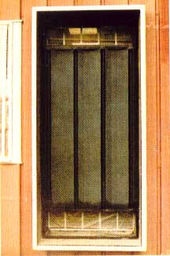

LUKE ELLIOTT AND DALE STRODE
Grilles inside the building?at the top and bottom of the collector?allow room air to circulate through the solar heater and be warmed. Each duct opening should be about twice as large as a horizontal cross section through the collector itself.